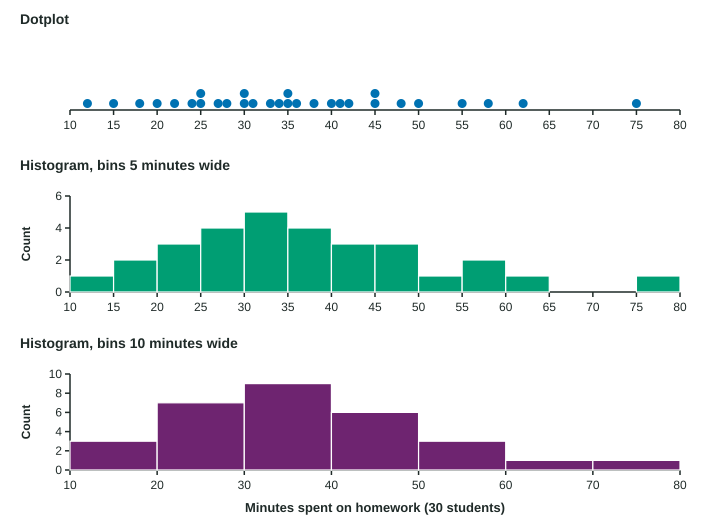

Graphical Representations for One Quantitative Variable
Dotplots and stemplots show every value of a small quantitative data set; histograms group values into equal bins and show the count in each, and their look depends on the bin width.
Part 1 · Hook
Why this matters
Part 2 · Before you start
What this builds on
Part 3 · Prerequisite check
Quick check before you start
1. Which variable is quantitative?
- Number of books read
- Favorite author
- Library card (yes or no)
- Grade level label
Show the answer
Books read is a count, so arithmetic with it makes sense.
- Correct: Number of books read:
- Favorite author:
- Library card (yes or no):
- Grade level label:
2. Of 25 students, 12 read four books or more. What proportion is that?
- 0.48
- 0.12
- 2.08
- 0.25
Show the answer
Part over whole: 12/25 = 0.48.
- Correct: 0.48:
- 0.12:
- 2.08:
- 0.25:
Part 4 · See it
See it first

Part 5 · Step by step
How it works, step by step
- Quantitative values have positions on a number linea dotplot puts one dot per value above its place on the line
- With many values, dots pile upa histogram groups values into equal bins and draws a bar for each bin’s count
- The bins are chosen by whoever draws the graphthe same data can look bumpy with narrow bins or smooth with wide ones
- Adding up the relative frequencies from the lefta cumulative relative frequency graph shows the proportion of values at or below each point
Part 6 · Key ideas
Key ideas
- A dotplot shows each value as a dot above a number line; repeated values stack. Best for small data sets.
- A stemplot splits each value into a stem (leading digits) and a leaf (last digit). It keeps every value; always give a key.
- A histogram groups values into equal bins; each bar’s height is the bin’s count or relative frequency, and the bars touch. Its look depends on the bin width.
- A cumulative relative frequency graph gives, at each value, the proportion of the data at or below that value. The proportion between two values is the difference of the heights.
Part 7 · Misconception
A common mistake
The wrong idea: A value that lands on a bin edge, like 4 books in bins 2 to 4 and 4 to 6, is counted in both bins.
What actually happens: Each value goes in exactly one bin. With bins that hold their left end, 4 goes in the 4 to 6 bin.
Part 8 · Check yourself
Check yourself
Exam-style questions. Anything you miss goes into your review queue.
Graph
Books read over the summer
1. How many of the students read more than 6 books?
- 7
- 5
- 6
- 12
Show the answer
Count the dots to the right of 6: one each at 7, 8, 9, 10 and 12, so 5 students.
- 7: More than 6 leaves out the two dots at 6.
- Correct: 5: Right: one dot each at 7, 8, 9, 10 and 12.
- 6: 6 is a number of books on the axis; count the dots to the right of it.
- 12: 12 is the largest value, not a count of students.
2. What proportion of the 25 students read 0, 1, 2 or 3 books?
Type a number. A table answer and a calculator answer are both accepted.
Show the answer
Dots at 0, 1, 2 and 3: , so the proportion is .
- Answer: 0.48
3. The teacher makes a histogram with bins 0 to 2, 2 to 4, 4 to 6 and so on, where each bin holds its left end and not its right end. How many students fall in the 2 to 4 bin?
- 13
- 5
- 2
- 9
Show the answer
The 2 to 4 bin holds the values 2 and 3: students.
- 13: A value of 4 is the right end of the 2 to 4 bin, so it belongs in the 4 to 6 bin.
- 5: The bin starts at 2, so it also holds the four students who read 2 books.
- 2: The width of a bin is 2 books; the height is the number of students in it.
- Correct: 9: Right: the bin holds the 4 students at 2 and the 5 at 3, and the students at 4 go in the next bin.
4. Why is a dotplot a good choice for these data?
- There are few values, so every student can be seen
- Dotplots work for categorical data such as favorite authors
- A dotplot gets rid of the students who read the most books
- A dotplot works for any data set, whatever the number of values
Show the answer
For a small quantitative data set, a dotplot shows every value on a number line.
- Correct: There are few values, so every student can be seen: Right: with 25 values a dotplot shows each value and how often it occurs.
- Dotplots work for categorical data such as favorite authors: A dotplot needs a number line, so it is for quantitative data.
- A dotplot gets rid of the students who read the most books: A dotplot shows every value, including the largest ones.
- A dotplot works for any data set, whatever the number of values: With hundreds of values the dots pile up; a histogram is then easier to read.
5. A histogram of 500 race finishing times uses bins 10 minutes wide. What happens if the bins are made 2 minutes wide?
- The same bars as before, each bar 5 times as tall
- More, shorter bars that show finer detail and more bumps
- The number of runners changes, since bins change
- Fewer, wider bars that give a smoother picture of the data
Show the answer
A histogram’s look depends on its bin width: narrow bins show detail and noise, wide bins smooth it away.
- The same bars as before, each bar 5 times as tall: Narrower bins hold fewer values each, so the bars get shorter, not taller.
- Correct: More, shorter bars that show finer detail and more bumps: Right: narrow bins split the data more finely, so small ups and downs appear.
- The number of runners changes, since bins change: Every runner is still in exactly one bin; only the grouping changes.
- Fewer, wider bars that give a smoother picture of the data: That is what wider bins do.
6. Why do the bars of a histogram touch, unlike the bars of a bar chart?
- To show that the values were collected one after another in time
- Its horizontal axis is a number line split into bins
- Because a histogram shows a categorical variable
- To make the histogram easier to color and to label
Show the answer
A histogram’s bins are consecutive intervals of a number line, so the bars touch; a bar chart’s categories are separate.
- To show that the values were collected one after another in time: The order the data were collected is not shown in a histogram.
- Correct: Its horizontal axis is a number line split into bins: Right: the bins cover a number line with no breaks, so the bars meet.
- Because a histogram shows a categorical variable: A histogram shows a quantitative variable.
- To make the histogram easier to color and to label: Touching bars come from the number line, not from the drawing style.
Part 9 · Summary
Summary
Part 10 · Up next
What comes next
Part 11 · Connections